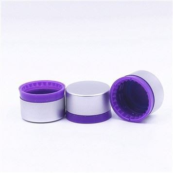
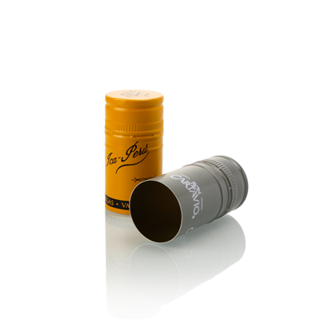
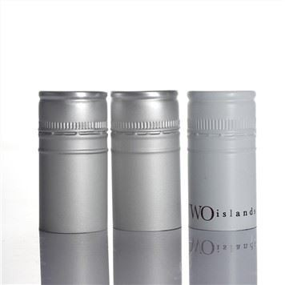
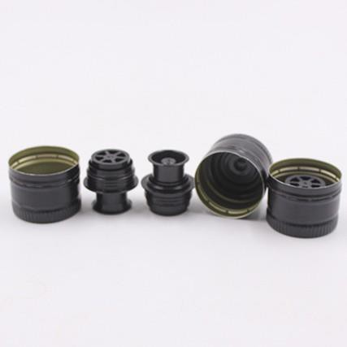
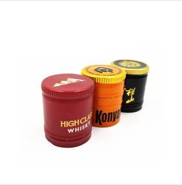
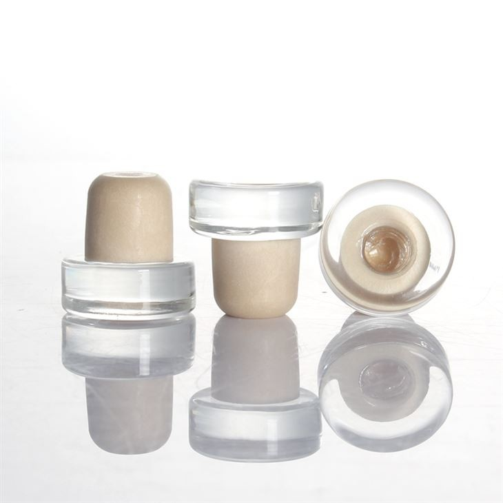
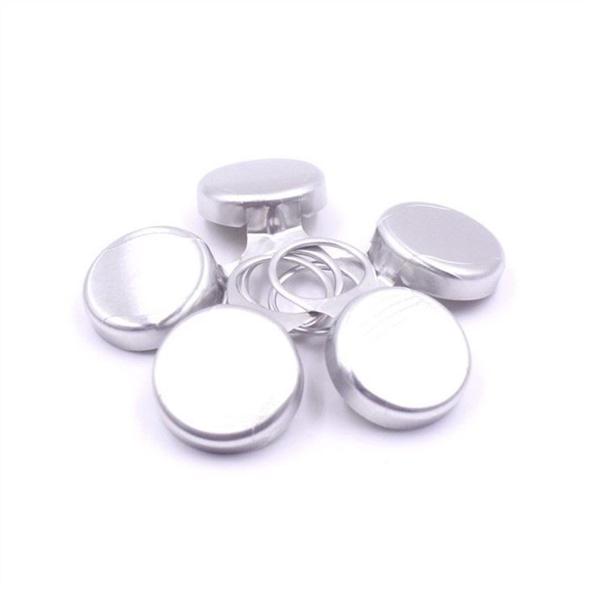
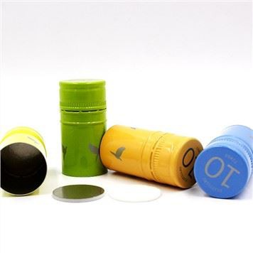

Jan 22, 2026
Do spirits bottle caps have a specific orientation?
As a supplier of spirits bottle caps, I've often been asked an interesting question: Do spirits bottle caps have a speci
read more

Jan 22, 2026
How do wine bottle screw caps compare to synthetic corks?
Wine lovers and producers have long debated the best way to seal a wine bottle. For years, natural cork was the go - to
read more

Jan 22, 2026
Are there wine bottle cap covers for biodynamic wines?
Are there wine bottle cap covers for biodynamic wines?
In the world of wine, biodynamic wines have emerged as a unique a
read more

Jan 21, 2026
What is the market share of wine aluminium caps?
The wine industry has witnessed significant transformations over the years, not only in terms of production and consumpt
read more
-
21
Oct Can I use a wine bottle screw cap on a wine with a high alcohol content?When it comes to wine packaging, the choice of closure is a crucial decision, especially for wines with high alcohol content. As a supplier of wine bo
Can I use a wine bottle screw cap on a wine with a high alcohol content?When it comes to wine packaging, the choice of closure is a crucial decision, especially for wines with high alcohol content. As a supplier of wine bo -
21
Oct
Are wine screw caps popular among consumers?Hey there, wine lovers and industry folks! As a supplier of wine screw caps, I've been diving deep into the question: Are wine screw caps popular amon -
20
Oct How do wine foil caps protect the wine?Hey there, wine enthusiasts! As a supplier of wine foil caps, I've seen firsthand how these little things play a huge role in keeping your favorite wi
How do wine foil caps protect the wine?Hey there, wine enthusiasts! As a supplier of wine foil caps, I've seen firsthand how these little things play a huge role in keeping your favorite wi -
20
Oct How do you prevent leakage from an aluminum plastic cap?As a leading supplier of Aluminum Plastic Caps, I understand the critical importance of preventing leakage from these caps. Leakage not only compromis
How do you prevent leakage from an aluminum plastic cap?As a leading supplier of Aluminum Plastic Caps, I understand the critical importance of preventing leakage from these caps. Leakage not only compromis -
20
Oct
Can screw caps be used for fruit wines?Hey there, wine enthusiasts! As a supplier of screw caps for wine, I've been getting a ton of questions lately about whether screw caps can be used fo -
17
Oct
Can I use a wine bottle screw cap on an aged wine bottle?Hey there, wine enthusiasts! As a supplier of Wine Bottle Screw Caps, I often get asked a bunch of questions about using screw caps on different types -
17
Oct
Do spirits bottle caps have expiration dates?Do spirits bottle caps have expiration dates? This is a question that might not cross the minds of many, yet it holds significant importance in the sp -
17
Oct
How do I open a bottle with a snap - on lid that's stuck?Hey there! I'm a supplier of bottle lids, and I know firsthand how frustrating it can be when you're faced with a snap - on lid that's stuck. It's one -
17
Oct
What is the puncture resistance of ROPP Caps?Hey there! As a supplier of ROPP Caps, I often get asked about the puncture resistance of these caps. So, I thought I'd dive deep into this topic and -
16
Oct
What is the history of spirits bottle caps?Spirits bottle caps have a rich and diverse history that spans centuries, evolving alongside the spirits industry itself. As a supplier of high - qual -
16
Oct What are the regulations regarding bottle cap design?As a seasoned bottle cap supplier, I've witnessed firsthand the intricate dance between creativity and regulation in the world of bottle cap design. T
What are the regulations regarding bottle cap design?As a seasoned bottle cap supplier, I've witnessed firsthand the intricate dance between creativity and regulation in the world of bottle cap design. T -
16
Oct
Are there any differences in wine bottle screw caps for red and white wines?When it comes to the world of wine, every detail matters, from the grape variety and the terroir to the aging process and the bottling. One aspect tha
Send Inquiry